Felipe Gutiérrez
Programmer/Creative
The design process starts by stating a concept of lightness, equilibrium. The first approach to the problem (translating the weight of the marble sheet to the floor), starts by using two
geometric primitives, the rectangle and it's more resistent subdivision, the triangle. To support the sheet with two subdivided rectangles or trusses in both extremes of the sheet creates
a system that is resistant with the least amount of elements. If we optimize the material section according to the forces (traction or compresion) more material is needed where the system
experiences compresion and less material is needed where there is traction, this let's us create a structure that is lighter. In theory the different forces need different types of materials
to reduce the section of the pieces, but for aesthetics reasons, the same material will be used for all the elements that experience traction or compresion.
Original sketch:
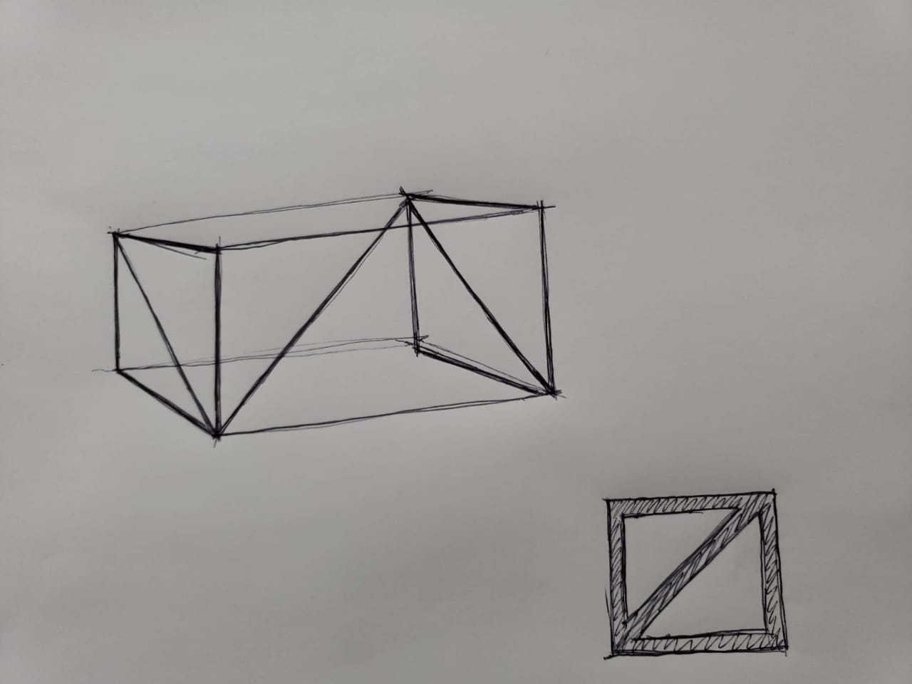
Knowing the initial concept, Grasshopper/Rhinoceros3d will be used to create the model, taking as a start point the dimension of the marble sheet, as the height that the table is going to have
and the distance between the sheet and the structure.
Parametric rectangle definition:
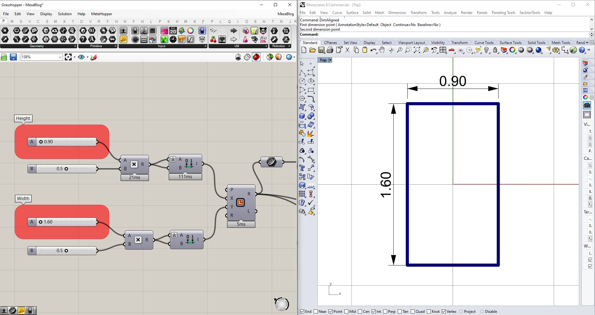
3D geometry definition:
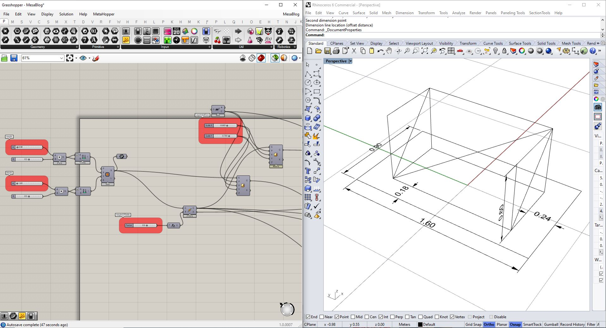
Given this information we have enough to create a parametric model in which the positions of the structure can be modified. This will enable us to create different designs according to a
structural optimization logic.
Parametric model:
Once that we have implemented our algorithm that let's us modify the elements, a FEM (Finite Element Model) is created. The Finite Elements are: beams that are modeled by lines and shells
that are modeled by meshes.
When the FEM is being created it is important that all the elements coincide, meaning; if the beam is in supporting a slab/shell, it's a must that the points that define the each of these
elements match.
Below, we can see that the mesh vertices match those of the line:
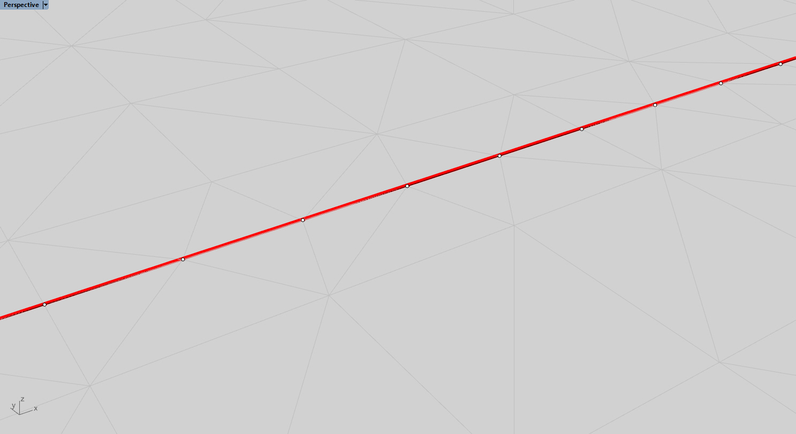
The procedure for the vertices to match is as follows:
Create a surface from the initial rectangle that is going to simulate the marble sheet, divide the surface into points, since the sheet is in contact with the beams, add the points that make
up the beams (in this case the original line was subdivided into smallers ones to get a more accurate structural analysis) to the surface subdivision and construct a mesh from them (through a
Delaunay triangulation) using Grasshopper's Delaunay Mesh component.
Shell and beam with matching vertexes:
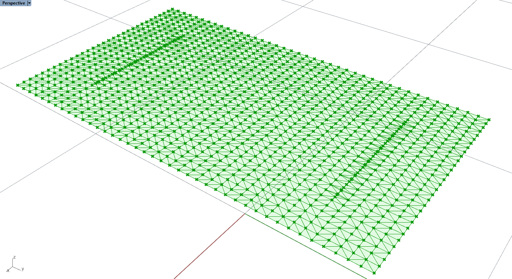
For the structural simulation the free version of Karamba3d (by Clemens Preisinger in cooperation with Bollinger und Grohmann ZTGmbH) for Grasshopper is going to be used. The analysis needs
points, elements, supports, loads and cross-section.
In this case the material is marble.
Marble properties:
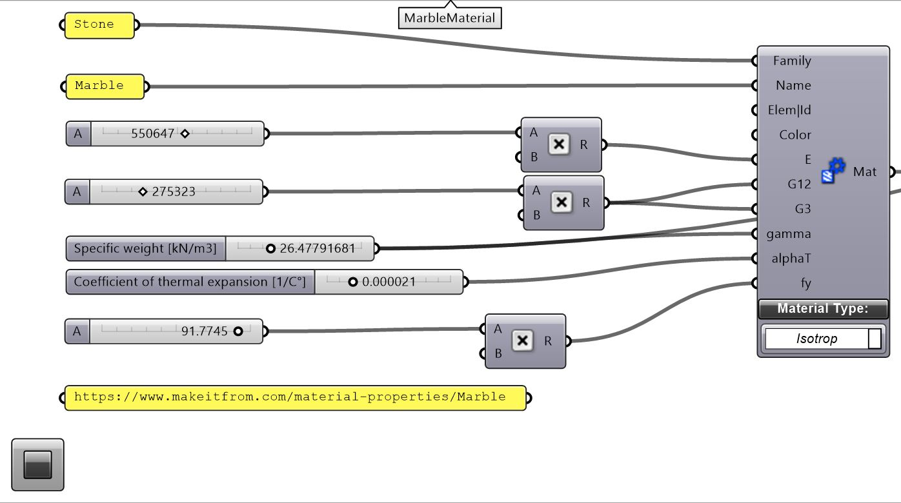
The next step is to define the sections for the beams (legs) and the shells (marble sheet), the supports (the points that are in contact with the floor will be used) and the loads (only the load
of gravity will be used). It is important that there are no duplicate points for the analysis. The Karamba3D's removeDuplicatePts will be used for this purpose.
FEA setup:
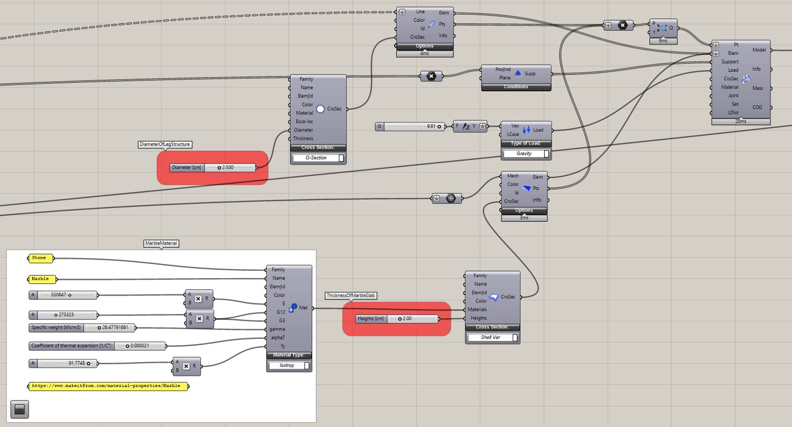
Once that the simulation is setup, a visualization can be generated.
FEA visualization:
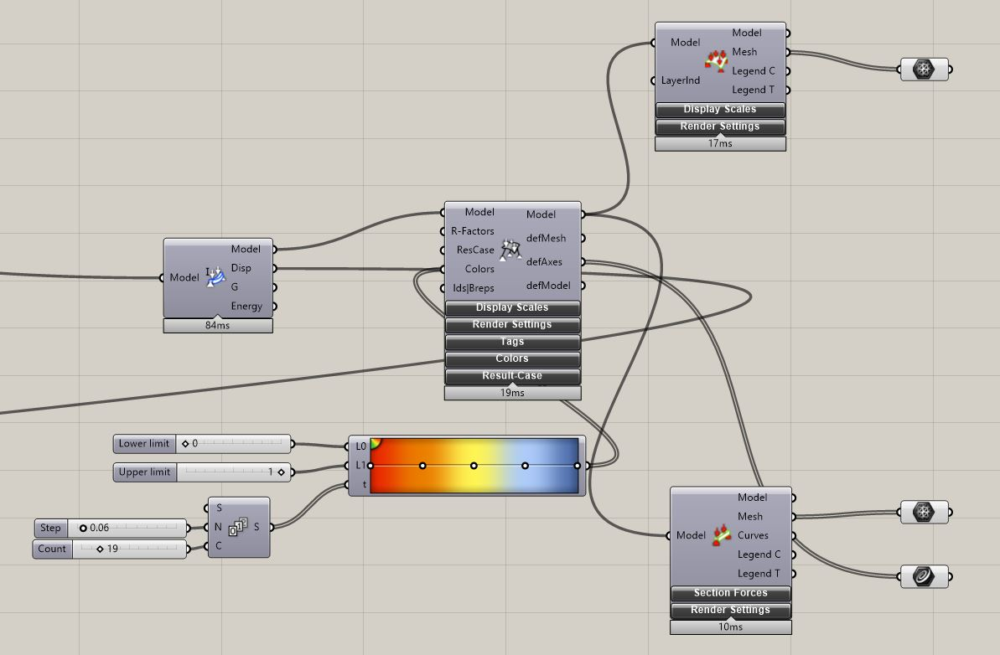
Then, to optimize the structure, the Displacement output from Karamba3D's Analyze will be used as the Fitness function.
The Galapagos component and it's Simulated Annealing solver are used to minimize the displacement.
Optimizing minimum displacement:
There are several optimizations that could be implemented to obtain less displacement, but due to the lightness design concept of the design this is the chosen design.
The first image is an example as it is more structurally sound than the second one, given that it has less displacement:
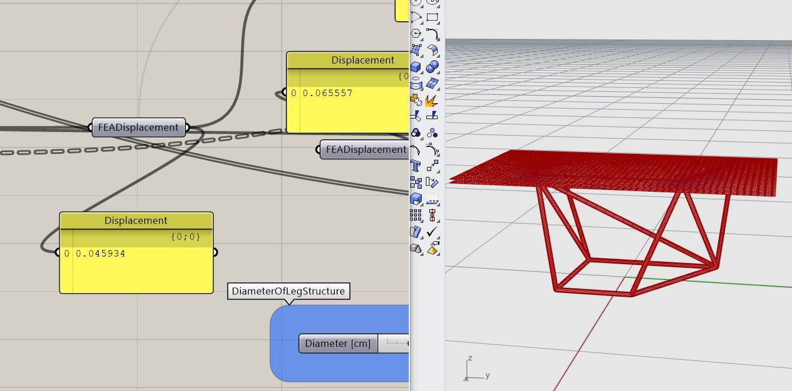
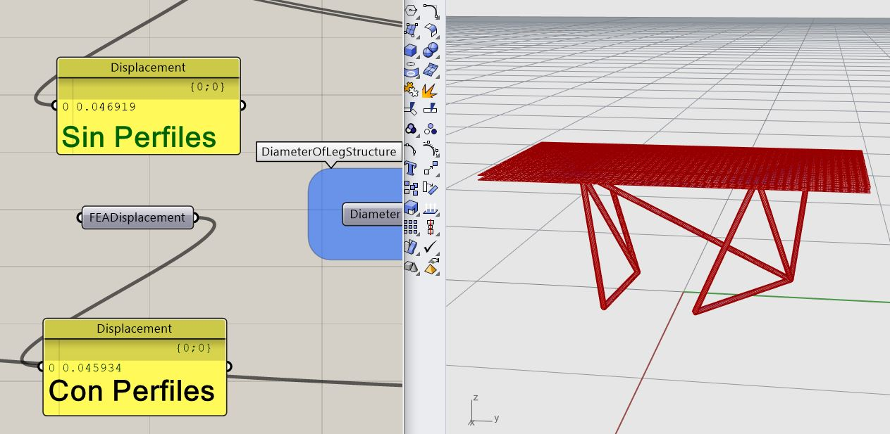
After having designed through structural optimization, the different sections that the real object will have are created, depending on the force the elements experience they have a smaller section
(traction) or bigger section (compression). The design is baked as breps (BoundaryRep-resentation) to Rhino from Grasshopper and "Split" operations between the "legs" create elements that can be
cutted and soldered together.
Construction detail:
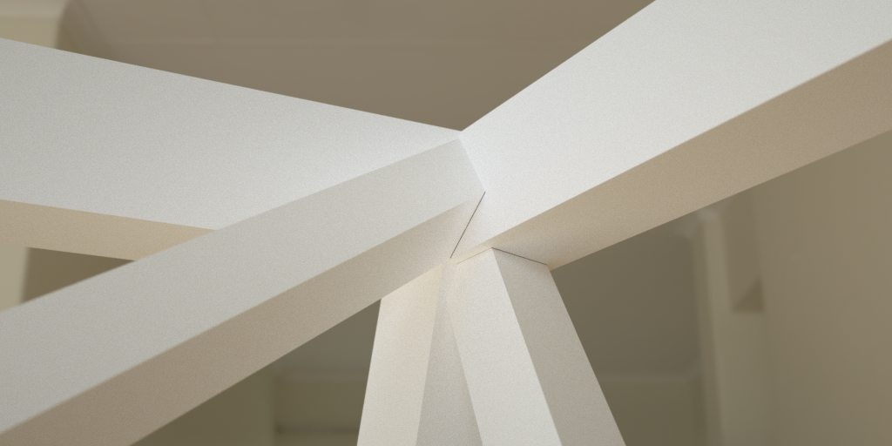
Finally material tests are made through renders to find which one will be picked for the final product.
Different rendering materials:
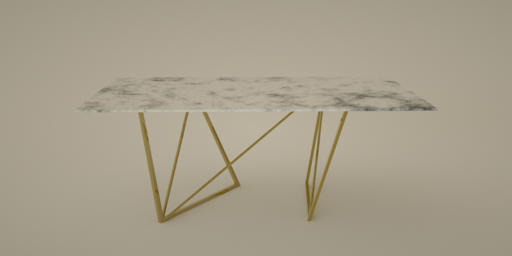
Bronze
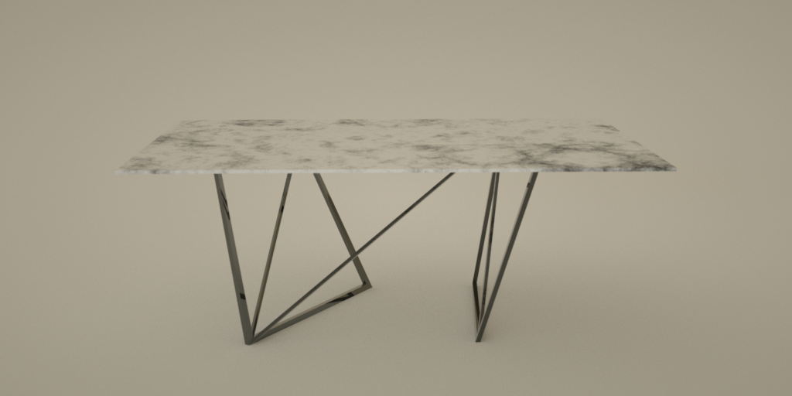
Black metal
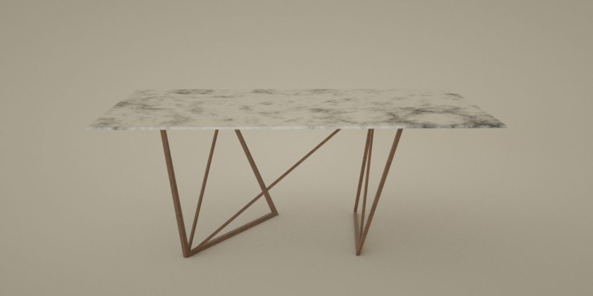
Corroded metal
Other rendered images:
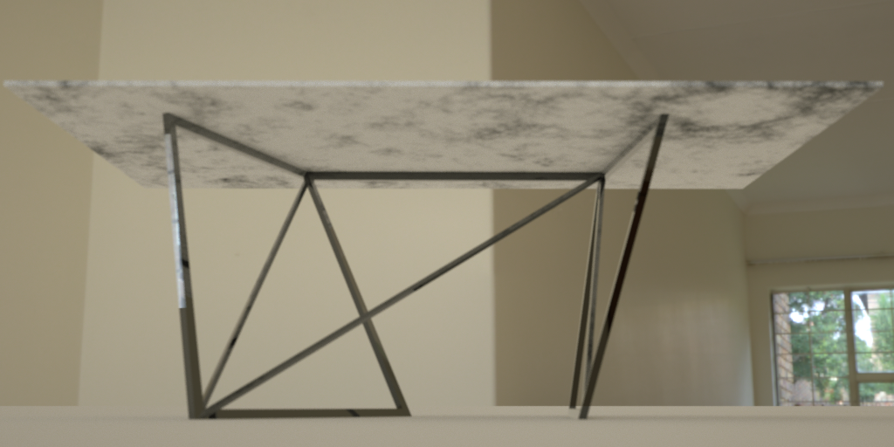
Black metal
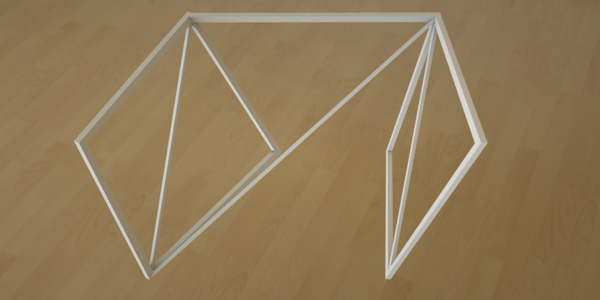
Clay render
 Clay render
Clay render